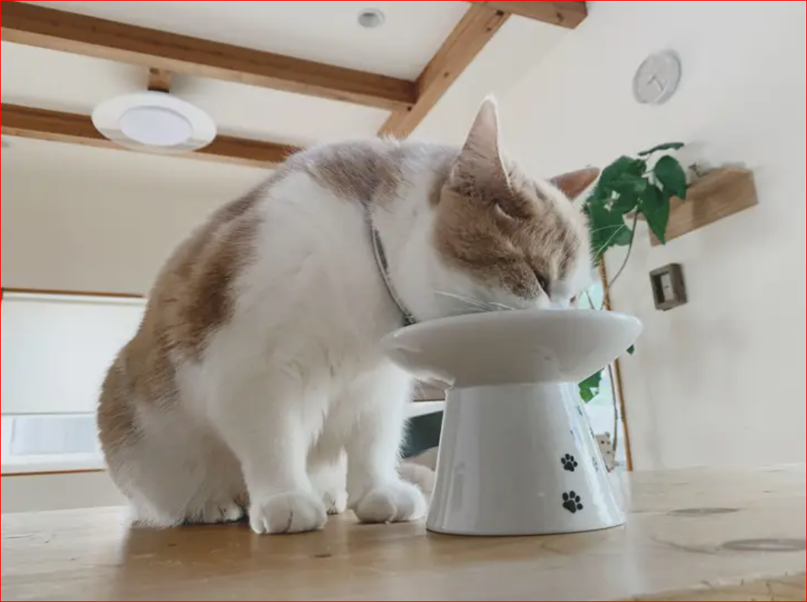

Fine Dining
In recent years it has become apparent that feeding cats from a typical cat bowl is no longer the best option for them. New designs of raised feeding bowls have become popular due to their many health benefits.
What is a raised bowl? A raised bowl is as the name suggests, a bowl on top of a short pillar with low edges. These bowls were designed after research found that adult cats were developing pain in their neck and joints from squatting down to eat. They also prevent whisker fatigue from occuring. Whiskers act as powerful antennae and help cats detect the world around them. In traditional bowls, the whiskers typically touch the sides of the bowl. This can cause stress to the cat as the whiskers are constantly warning the cat that they are near something.
